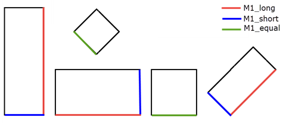

You can find
length and width edges of any rectangle. Length edges are defined
as the longer edges and width edges are the shorter edges. You can
also identify squares and output one of the edges.
The following figure shows a conceptual
illustration. For this check, one edge of each type (long, short,
or equal) is output per polygon. The check can easily be changed
to output all edges of a specific type.
Figure 1. Length and Width Edges of Rectangles
The check uses a single-layer DFM Property Select Secondary operation.
The primary layer is the polygon layer of interest. The :EDGE layer
derivation is used to output edges of the primary layer shapes that
match the specified conditions.
Try It!
 |
Calibre Advanced DRC (eqDRC) Tutorial and Example Kit
Go to this page on Support Center
to download the complete eKit.
This example is in the miscellaneous_checks/rectangle_edges example directory.
|
Procedure
- Filter out metal1 shapes that
are not rectangles.
M1 = RECTANGLE metal1
If you want to consider all
metal1 polygons, skip this step.
- Find and output a long edge
of the polygon.
M1_long = DFM PROPERTY SELECT SECONDARY M1
SELECT M1:EDGE NOMULTI
[ - = ( DRC_NE(MIN(LENGTH(M1:EDGE)),
MAX(LENGTH(M1:EDGE))) > 0) ? 1 : 0 ]
== 1
[ - = (LENGTH(M1:EDGE) == MAX(LENGTH(M1:EDGE)))
? 1 : 0 ] == 1
[long_len = LENGTH(M1:EDGE)]
“SELECT M1:EDGE NOMULTI” instructs the operation to output one
edge of the M1 layer shape, where the edge must meet the subsequent
property conditions. Remove NOMULTI if you want to output all edges
that meet the conditions.
The first conditional expression
limits the output to polygons with unequal edge lengths DRC_NE()
returns 1.0 if its arguments are not equal within a built-in tolerance,
and returns 0.0 otherwise.
The second conditional expression
limits the output to edges with a length equal to the maximum edge
length.
The edge length is attached
as the property long_len.
- Find and
output a short edge of the polygon.
M1_short = DFM PROPERTY SELECT SECONDARY M1
SELECT M1:EDGE NOMULTI
[ - = ( DRC_NE(MIN(LENGTH(M1:EDGE)),
MAX(LENGTH(M1:EDGE))) > 0) ? 1 : 0 ]
== 1
[ - = (LENGTH(M1:EDGE) == MIN(LENGTH(M1:EDGE)))
? 1 : 0 ] == 1
[short_len = LENGTH(M1:EDGE)]
- Find polygons
that have edges with equal lengths, and output one edge.
M1_equal = DFM PROPERTY SELECT SECONDARY M1
SELECT M1:EDGE NOMULTI
[ - = ( DRC_EQ(MIN(LENGTH(M1:EDGE)),
MAX(LENGTH(M1:EDGE))) > 0 ) ? 1 : 0 ]
== 1
[equal_len = LENGTH(M1:EDGE)]
The conditional expression with DRC_EQ() limits the output to
polygons that have equal edge lengths.
It is not necessary to select edges of a specific length, since
they are all equal. As with the preceding derivations, remove NOMULTI
to output all edges that meet the conditions.
Suppose the M1 layer contains only polygons that are orthogonal
to the database axes, and you want output the horizontal edge. You
can add this condition:
// for orthogonal input, include this to output the horizontal edge
[ - = (LENGTH(M1:EDGE) == LENGTHX(M1:EDGE)) ? 1 : 0 ] == 1
- Output
the results with a DFM RDB operation.
// Set default options for DFM RDB operations
DFM DEFAULTS RDB CELL SPACE ALL CELLS CHECKNAME "%_l_"
// output the results
rectangle_edges {
DFM RDB M1_long eqdrc.rdb
COMMENT "long edge of rectangles on metal1"
DFM RDB M1_equal eqdrc.rdb
COMMENT "equal length edge of rectangles on metal1"
DFM RDB M1_short eqdrc.rdb
COMMENT "short edge of rectangles on metal1"
}
The derived edge layers can be used in further layer operations.